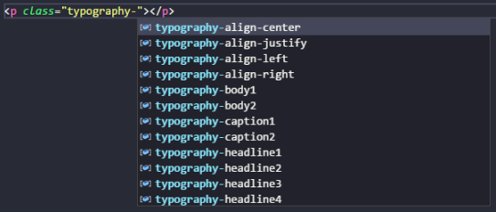
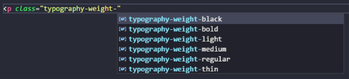

Introdução
Saiba como o Xmutarn é fácil de usar e fácil de aprender! Bata o olho e saiba o que está fazendo.
Iniciando sem dificuldades
Aprendendo a partir de um padrão simples e decorando alguns prefixos, você já pode começar a criar suas páginas.
Prefixos
Nós acreditamos que a maioria, senão todos, os desenvolvedores que buscam pela produtividade, utilizam um IDE ou um editor de código inteligente que é dotado de um IntelliSense. Com essa ideia em mente, usamos prefixos e padrões para facilitar e agilizar a codificação, discartando a necessidade de ficar de olho na documentação do framework.
Com a ajuda do IntelliSense e o prefixo certo, é possível obter todas as opções de estilo. Isso é útil para quem esqueceu o nome daquela classe, mas sabe seu prefixo; evita que iniciantes precisem consultar constantemente a documentação do framework; também é útil para ver as possíveis opções que podem não estar documentadas.
Exemplo com o uso de tipografias e seu prefixo typography-:

Listando todas as opções de espessura (weight) de tipografia (prefixo typography-weight-), com ajuda do IntelliSense:
